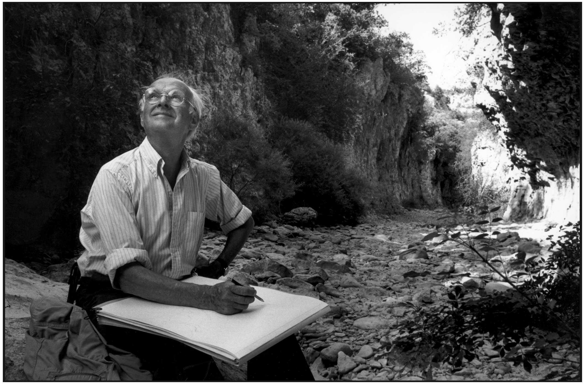

Henry Cartier
The life of a master

Master Photographer who transformed street photography
- Born in 1908 in France.
- Pioneerd Street Photography into a speciality and a true art.
- Magnum photographer whose pictures inspire millions even today.
- Decisive Moment - A term that came to be popluar after his leendary work
— Henri Cartier-Bresson[22]